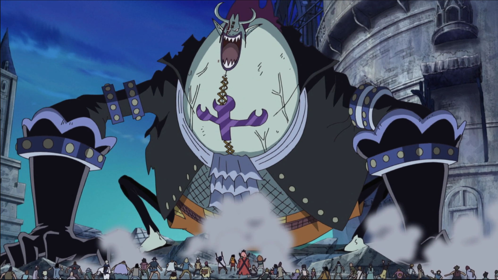

How to keep up when you’re gorging yourself with tasks
I think about Moria from One Piece sometimes.

He’s a character who gorges himself on souls, eating them like bonbons to add to his power. As he does, he becomes more powerful and fearsome, but at the same he gradually loses his own consciousness, his mind fragmenting under the weight of what he’s taken in.
There’s a lesson here somewhere, and if you swap souls for projects, it becomes eerily fitting. It maps perfectly onto what I feel when I say yes to too many projects at once: you gorge on too many and you slowly lose consciousness.
Yes, I feel like Moria. Minus the whiny attitude (he’s a wimp. You wouldn’t say with that badass pose).
If you have small tasks or things that finish in a sitting, my approach is quite simple: if I’m thinking about it now, I can do it now. It honestly works only with emails, slack messages, or anything that would not open a Pandora vase filled with distraction. But what about big projects? What about conflicting priorities stacked on top of each other? What about deadlines?
Well, stick with me, while we swim into the scary waters of project management.
The first problem is Location, not Time
Everyone will tell you the first problem in project management is time. Managing your time. Blocking your calendar. Getting ahead of deadlines.
Not necessarily wrong, of course you need to block your calendar.
For example, a friend of mine swears by fake deadlines. They create an artificial cutoff before the real one arrives, so they can be ahead of the panic. It’s a good system, nothing wrong with it, if it works. I think my brain knows the difference between the real and the fake deadline. The real deadline lives somewhere deep and irretrievable. Unless I forget the real one entirely (in which case this whole metaphor falls apart).
Even if you block the calendar and act upon fake/real deadlines, how do you know what to do? How do you stay on top of the soul-eating (pun intended) tasks, in the correct order, while organising different collborators or levels of priorities?
So the real question becomes: where does a project actually live?
I don’t mean in what folder or under what tag. I mean: what is the journey this project takes through your systems, and does each stop serve a purpose?
Consider a real project as it arrives: it starts as an email thread, or a GitHub issue. Maybe someone else initiated it; maybe you did. Maybe it was a conversation while having coffee, or during a meeting focused on something else entirely. Either way, it’s sitting in an inbox that was not designed to hold ongoing thoughts. So you move it. Into a note-taking app, maybe, or onto a whiteboard, or both. How to forget the everlasting analog notebook. I hope it does not leave in a paper you found stacked under your desk, but it might. And now it exists in two places, maybe three if we count your brain. You update one and not the other. Three weeks later you’re looking at your calendar block (the one you made in a rare moment of optimism) and you realize the version of the project that actually exists is the one in your notes, not the one you scheduled time for. What do you do now?
The problem is that the same project is living in three different places, each one showing a different version of the truth, and none of them are talking to each other. And no, I will not be swayed into thinking that it’s because “you’re tracking too much”. Because there’s no such a thing as taking too many notes (am I obsessed? Not the topic of this blogpost).
My answer to this mess is: transfer your knowledge with intention. Each tool should hold a different phase or type of engagement with the project. The question to ask yourself is less “where should this go?” and more “what am I doing with it here, and does that change when it moves there?”
What I actually use
The other problem with opening up your workflow for others to see is that it sets up the wrong expectations. She’s writing about project management, you might think, then she might be extremely organised. Well, yes and no. I feel extremely organised, myself; but that does not exclude that my system is based on four colored markers, three apps, and a Friday panic.
So here is a breakdown on what I use, and how.
Logseq is where things land first. I wrote about this so many times that it’s becoming boring and obsessing. I know it, you know it, and it’s not gonna change (and again, you don’t have to use Logseq if you can use whatever works for you). This is the place where emails, conversations, follow-ups, half-formed ideas gets dumped without friction. The powerful thing is that Logseq forces a choice immediately: is this thought attached to a date (in which case it’s a task) or a project page (in which case it’s part of something larger)? You can’t just write a note that floats. The structure of this app forces you to think before dumping.
Google Calendar is the only place with real deadlines attached. Not fake deadlines, not inspirational time blocks, but actual commitments. If it’s not on the calendar, it doesn’t exist, and by extension it doesn’t have a deadline. This is harsh, but also… the calendar never lies to me. Unlike my brain.
Analog notebook - yes, it still exists. I like to think that it holds a purpose, and maybe it does. It’s mostly rambling if I’m honest. And mostly from when I am away from my computer and I can’t drop that rambling anywhere else. It does help me think tho, and sediment things I need to think about (see also “witheboard”). It is also where I doodle, because digital sucks for that!
GitHub is where I work with other people, and where the work is mainly, but not exclusively, codable. And by that I do not mean only scripts and code, but also encodable. Like messages, or responsibility that can be converted into a specific format. For example, GitHub could be a place where a community of people working in the same project identifies who holds the duty for a specific task, and can assign a reviewer that holds you accountable for that duty. Quite handy.
Obsidian is for long-form thinking. When something needs coherence,and real writing (like this blogpost) it moves here. I use Obsidian to track my extremely long term This is where projects get documented properly, where the thinking sediments into something that will still make sense in three weeks.
The whiteboard — and I’m aware of the absurdity here. I am a professional promoter of note-taking apps and digitalization. I have strong opinions about knowledge management. And yet. Two whiteboards: one at home, one at work. Four colored markers. Zero shame. What the whiteboard does that none of the apps do is make me think. There’s something about the physicality of it that clarifies in a way that typing never does. And the thinking sediments differently. You stand in front of a whiteboard and let the problem sink in. Why haven’t I replaced it? I’ve tried. Nothing compares.
Where it actually falls apart
Three hiccups. They come up again and again.
1. The silent commitment. An email thread that started as a quick conversation becomes a real obligation, but you never formally entered it into any system. It lives only in the email chain. Weeks later, the other person follows up, and you think: oh. That thing. I was supposed to be doing that. I didn’t forget because I’m forgetful (well…). I forgot because I never moved it from “interesting correspondence” to “actual project”. It strongly goes back to “where the project lives”, doesn’t it?
2. The “it’s too early for this idea!” idea. Something comes up that I know matters, but it’s not time to act yet. It’s too nebulous and too fragile to assign to a project page. So it floats. It lives only in my unreliable brain. Chaos ensues.
3. The orphaned project. This is honestly the worst one, and it happens to me roughly 80 percent of the time. A project finishes, or should finish, but you never formally close it. It lingers as an old calendar block, an orphaned project page in Logseq. Not active, not done, just haunting you from multiple places at once.
There are probably fixes for all of these. If I’d found them yet, I’d be using them (I’m not).
The System Doesn’t Need to Make Sense to Anyone Else
Here’s what I’ve learned: a system does not need to be elegant or universal or explicable to another human being. It needs to work.
My system is inefficient by some measures. It’s analog and digital in a way that makes no sense if you read the productivity books. But it keeps me on top of the pile. It means that when I’m drowning, I can still see the surface.
The most efficient system is not the one that works theoretically. It’s the one that works in practice, for your actual brain, with your actual constraints.
If that system looks like madness from the outside, that’s fine. You can think about the badass pose Moria has and convince yourself that your are just absorbing power, and not losing consciousness yet.